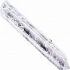

Sobre a "energética" dos dentes
Influências energéticas sutis na cura de dentes e gengivas
Como parte da seção “holística” de CuraDente, as páginas seguintes, parte da categoria “Energética”, dentre outras coisas apresentam estudos de casos dentários muito interessantes, testemunhos da vida real e pesquisa que mostra (ou implica) que mesmo a substância mais dura do corpo (esmalte dentário) é, em sua base, pura energia e portanto passível de (e moldável por) influências energéticas, emocionais/psicológicas e espirituais. Amplamente demonstrado, por exemplo, na forma de cura Chi (na China, todos os tipos de condições graves têm sido curadas com energia chi, inclusive dissolvendo tumores cancerosos em segundos [link em inglês]), as abordagens de cura energética parecem ser aconselháveis a fazerem parte dos esforços “completos” de se curar os dentes de alguém.